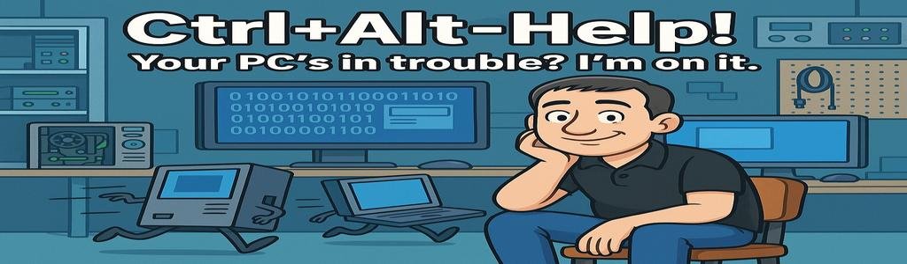
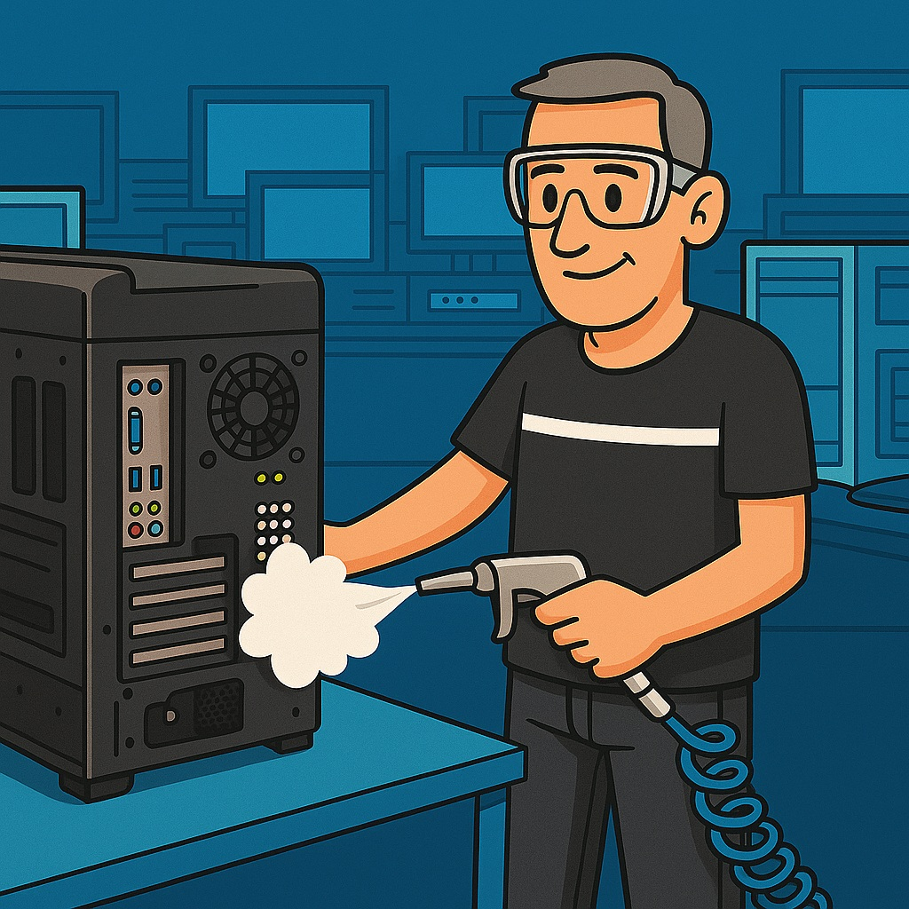
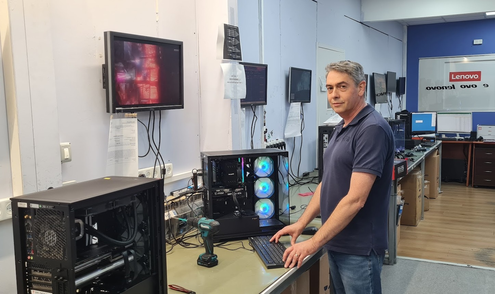
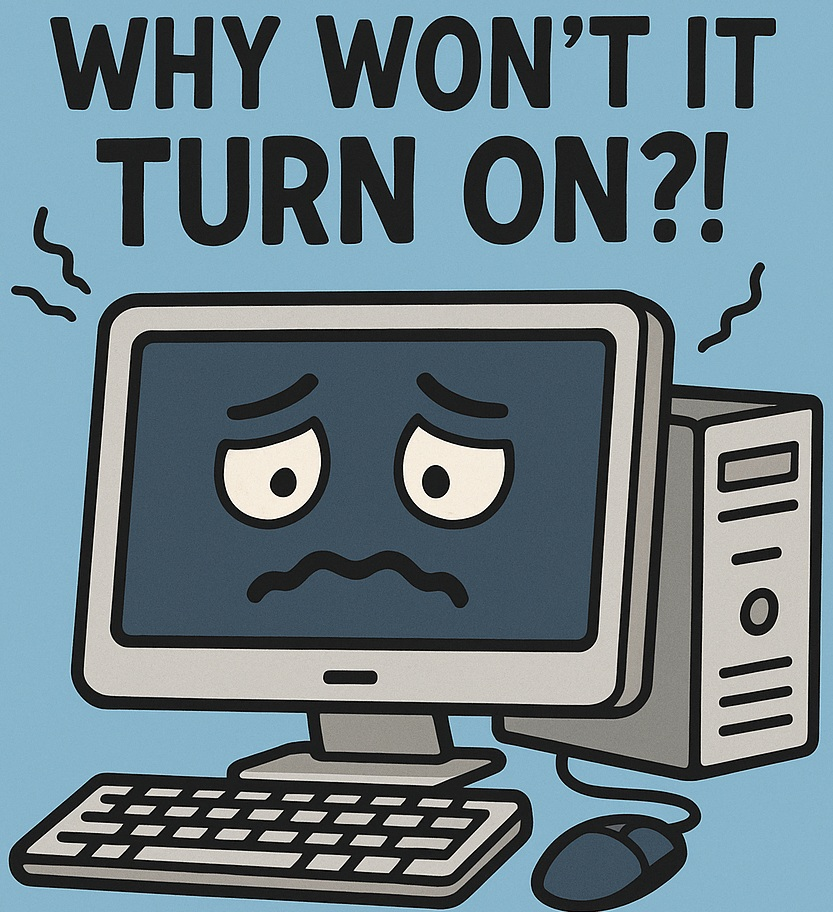
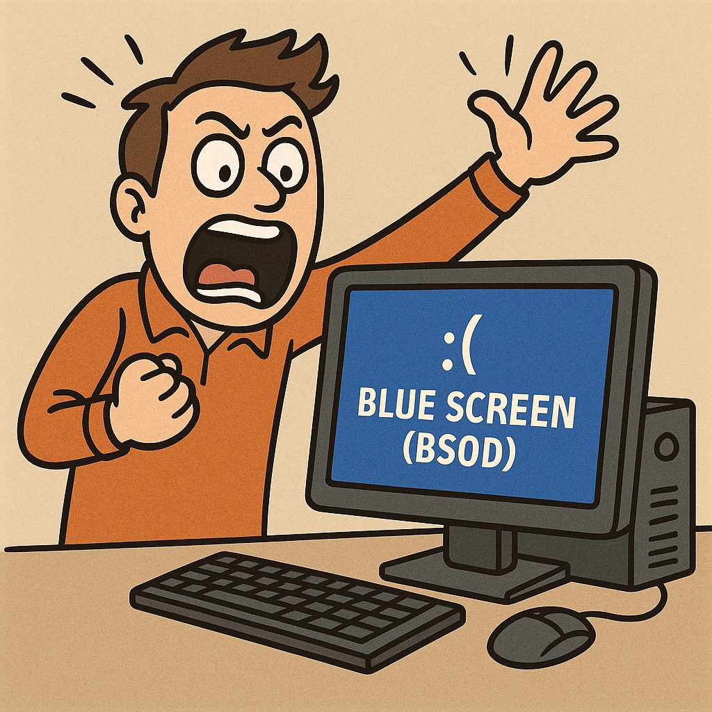
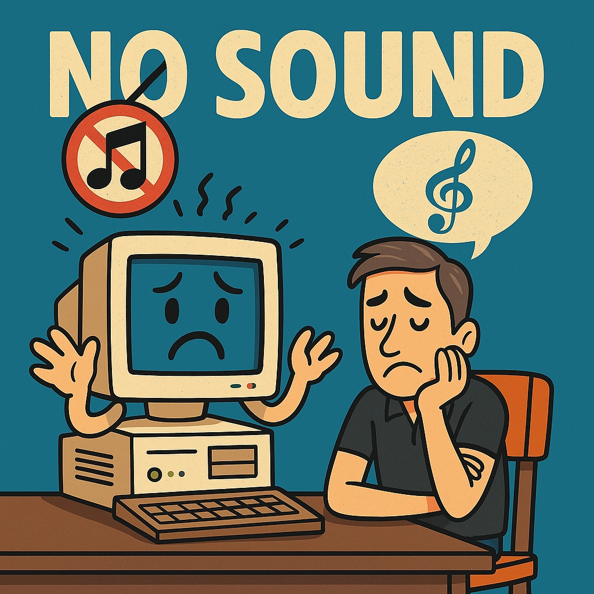
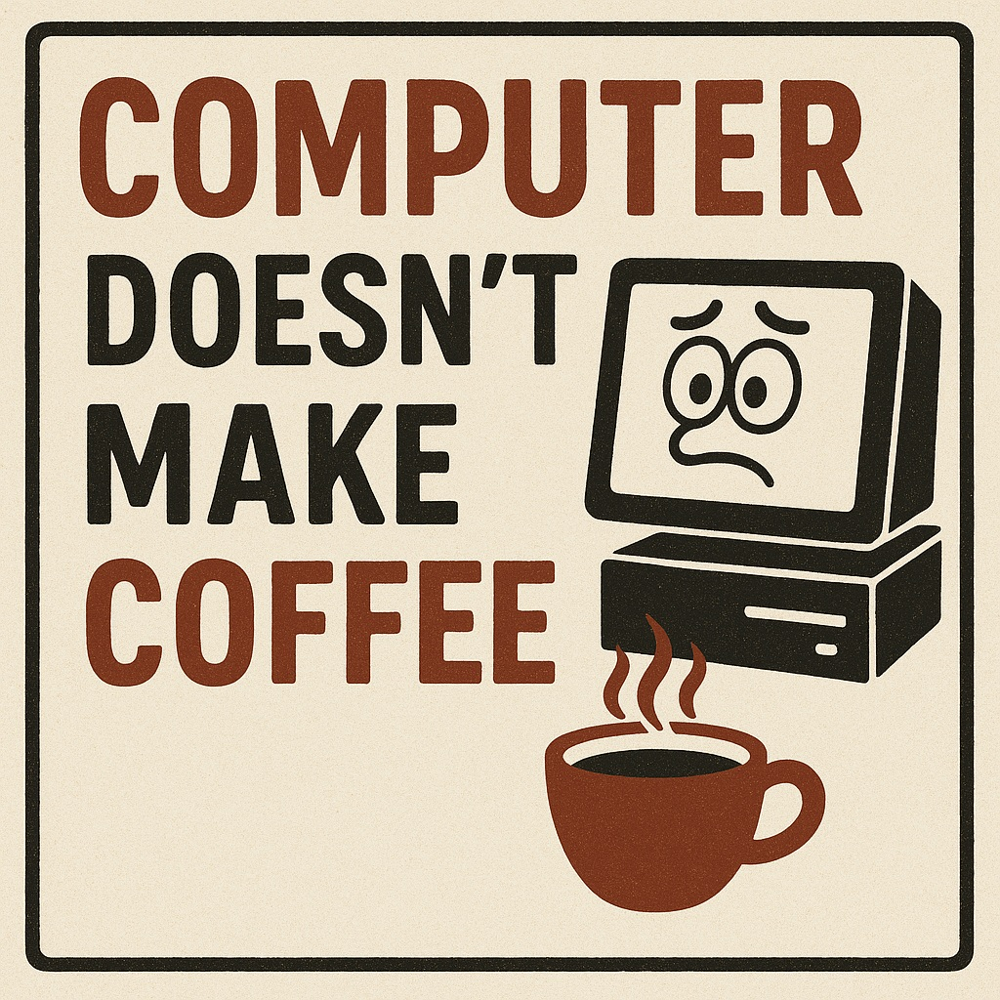

First Aid for Repairing a Desktop Computer

A little about me

My name is Daniel. For the past 20 years, I have been working at a large computer company.
During these years, I managed a desktop computer repair lab at one of the company's branches.
Later, I served as the company's Chief Technical Director and was responsible for managing all of its laboratories.
Currently, I manage the central computer repair laboratory of the company, oversee the technical team, and deliver effective solutions for both hardware and software issues.
A New Course – New Horizons
Today I'm studying a QA (Quality Assurance) course, as part of my journey to grow, learn new skills, and expand into the tech world.
My goal is to combine the hands-on technical experience I've gained over the years with modern tools in testing and automation — and open exciting new doors for my future.
The 5 Most Common Desktop Computer Problems
The Computer Won’t Turn On

How it feels:
“I pressed the button... and it's dead! Just completely dead!”
Solution:
-
Make sure the power cable is connected
-
Check the power supply switch on the back
-
Unplug the computer from power for 10 seconds, then try again
-
Still nothing? The power supply unit (PSU) might be faulty
The Computer Turns On – But No Display
How it feels:
“The fans are spinning, but the screen on a diet – I see nothing!”
Solution:
-
Make sure the monitor is actually turned on
-
Check the HDMI/DP/VGA cable
-
Try switching to a different output port on the computer
-
Reseat the graphics card (if there is one)
Blue Screen (BSOD)

How it feels:
Everything was fine... and then came the boom - Blue Screen
Solution:
-
Write down the error code (e.g., MEMORY_MANAGEMENT)
-
Check your RAM using a diagnostic tool like Windows Memory Diagnostic
-
Update drivers – especially for the graphics card, motherboard, and system components
-
Make sure there's no overheating – monitor temperatures with appropriate software
No Wi-Fi Connection
How it feels:
The internet vanished into thin air
Solution:
-
Make sure Wi-Fi is turned on
-
Check if other devices can see the network
-
Restart the router
-
Run the Windows troubleshooter or relevant tool
No Sound

How it feels:
I played a movie – and got cemetery silence
Solution:
-
Check speaker or headphone connection
-
Make sure the volume isn’t muted
-
Set the correct default output device
-
Reinstall or update audio drivers
Computer Doesn’t Make Coffee

How it feels:
I spent thousands – and it can’t even make a cappuccino
Solution:
-
Make sure you're not confusing it with an espresso machine
-
Open your browser and order Wolt (or your favorite delivery app)
-
Or... start a QA course — let’s see what burns out first
⬆ Back to Top